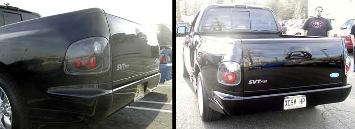
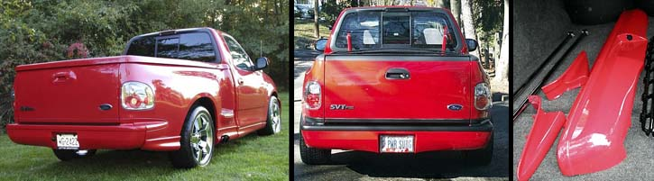
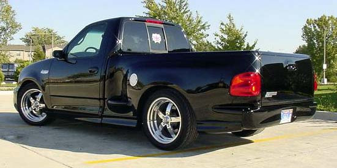
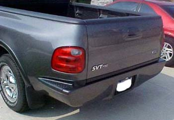
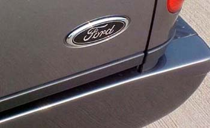

|
roll pans |
|
The hot roll pan seems to be the Sir Michael's unit (includes steel pan and fiberglass end caps):  Unfortunately, Sir Michael's is backed up on production and may never resume. Other options include the Lund pan (smooth steps not included):  And the Street Scene pan (smooth steps also available from SS):  And the APC pan:   |